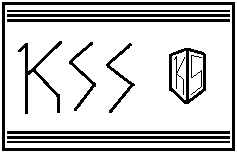
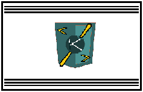
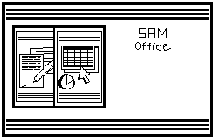

Samos, Streamlined Application Manager, originally created by "md", is a Javascript webbrowser attempt at making a fully coded file/application executor. Samos uses basic colors as the default red blue and green default css colors. All the source code will be in zipped files and all of the versions can be executed by the links given below under the cards.
SAMOS: VERSION BETA
First BETA
- Added Text file uploader
- Added HTML Editor
- Added Music file uploader
- Added Image file uploader
SAMOS: VERSION 1.0
Minor Update
- Added few programs
- Transported volume mixer to a button

SAMOS: VERSION 1.1
 BIG UPDATE
BIG UPDATE
- Piano tune editor (NOT FINISHED)
- Updated SAM OFFICE with Notes and Spreadsheets application
- Created slots for K Compiler and Games (NOT FINISHED)
- Official prototype python version made (NOT FINISHED)
- 3d preset slots along with a home directory (NOT FINISHED)
- Full UI change along with fonts

SAMOS: Ai Builds (NOT USED)
Download SAMOSAI source codeK Style Sheets
K Style Sheets is a library in the K Programming Language for handling styles. The structure is very similar to CSS (Casading Style Sheets).
VERSIONS KSS
- KSS 1.0 - SamOS 1.2
K Programming Language
The K Programming Language is the universal language of SamOS, though it not used to build it. The K Programming lanuage is Streamlined based
VERSIONS K
- K 1.0 - SamOS 1.2
Sam Office
SAM Office is the series of applications in SamOS meant to be used as daily word processing, spreadsheets, and slideshow applications.
VERSIONS Sam Office
- Sam Office 1.0 - SamOS 1.1
 SAMOS | operating system
END OF WEBSITE
SAMOS | operating system
END OF WEBSITE